Size Matters
home | Booster Warnings by Month | Moderna | Pfizer | Janssen | Moderna (outside USA) | Pfizer (outside USA) | Janssen (outside USA) | International Deadly Lots | 1st & 2nd Doses | Severe | Lethal | Size Matters | Lot Sizes | Time till onset | Second Peak | Lot Expiry Dates | RNA Degradation | Causality | All or Nothing | Clusters | Symptom | Paralysis | Children | Gender | States | Geography | Japan | Case Reports | Whistle Blowers | EMA Leaks | Video Library | Treatment | Background | Download Source Code | Data Cleaning | Donate
If this site is slow loading that's because over 1 million people are accessing it right now. Please use auxillary site HowBadisMyBatch.com which has been set up to cope with this overload. Thankyou.
Deaths per number vaccinated each day
Imagine, for a moment, that all lots were equally toxic. If they were all equally toxic then they should all produce the same number of deaths per 1000 vaccinated.
Now, the CDC has provided us with the number of people vaccinated for on each day of 2021, and in VAERS we have a count of the number of deaths following vaccination on each day.
If follows that a plot of deaths/number vaccinated for each day of the year should be a horizontal flat line.
Bearing this in mind, please watch this video - Deaths per Vaccinated
As you can see, the number of deaths per vaccinated decreases progressively over the entire year, indicating a far, far greater toxic effect initially. This is very strong confirmation of the trends identified before and published under "Death by Alphabet" - namely that there has been a reduction in toxic effects as the alphabetic designation of batches ascends - the alphabetic designations ascending as the year passed.
If you wish to see the CDC data on numbers vaccinated - it can be found here - CDC data
A Vaccinator's Week
I took the whole database of VAERS for 2021, and used the vaccination date column to count the number of people vaccinated on each day. When plotted in a graph, the highest number of vaccinated was on a weekday - fewer were vaccinated on Saturday and Sunday. Consequently, vaccination had a cyclical pattern each week -
This cycle repeated every week, so I was curious to find out if deaths correlated with the weekly rise and fall of the numbers vaccinated.
So, I counted the number of deaths associated with vaccination on each day of the week
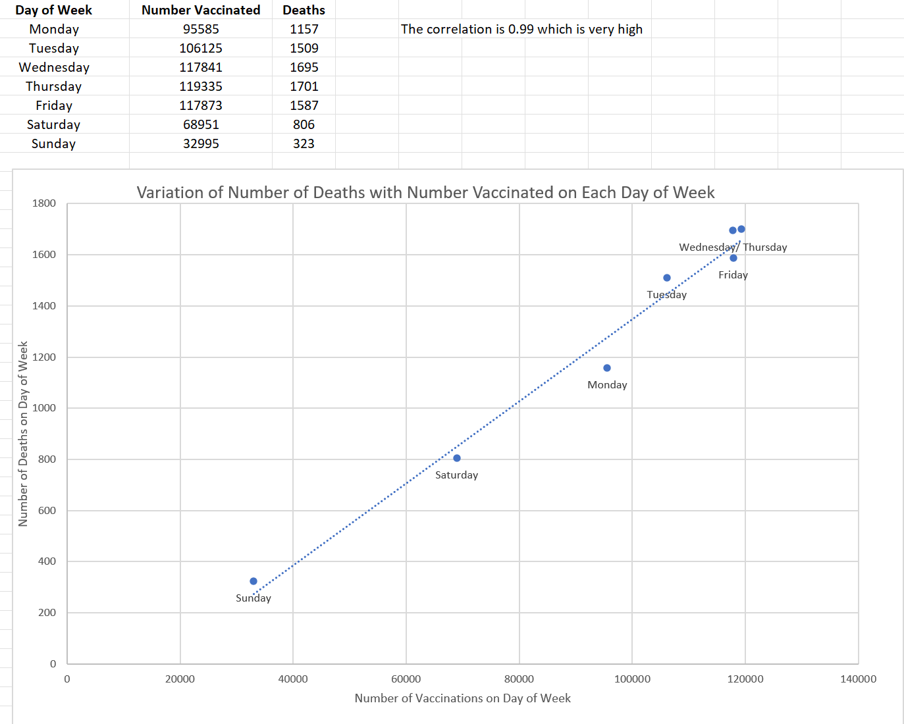
I found that number of deaths were proportional to the number vaccinated each day - and rose and fell with that number. In fact the correlation was very high (0.99), probability = 0.046
A colleague of mine, Jason Morphett, counted the number of deaths associated with each vaccination date for the whole of 2021. The resulting graph shows that number of deaths follows a weekly cycle. Deaths follow a pattern of rising and falling. You can see the first low occurs on the 3rd Jan (Sunday), but the subsequent future lows are on the 10th, 17th, 24th, 31st Jan and 7th, 14th, 21st and 28th Feb. All dates are Sundays. (Jason's Substack is highly recommended as a useful source of analyses)
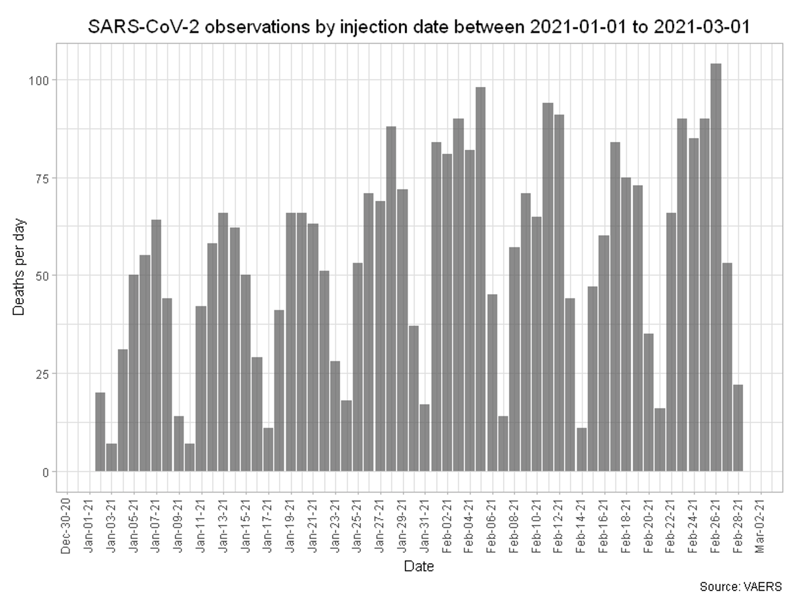
In this chart the x-axis is the date of vaccination (NOT the date of death). The y-axis is the number of deaths resulting from the vaccinations on that day. This pattern persists all the way through 2021.
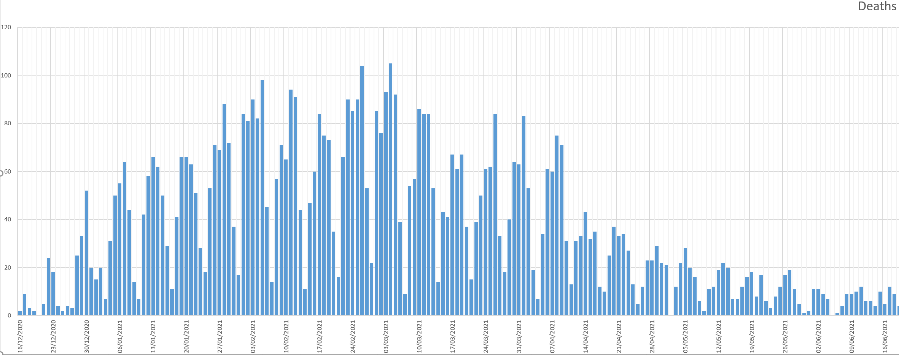
So why do more deaths result from vaccines given on Thursday? Why do vaccines given on Sunday produce the fewest deaths? The answer is simply because the number of deaths is proportional to the number vaccinated on a particular day. Thursday is the busiest day for vaccinations, and Sunday is the quietest. This is a very strong indicator that the deaths are caused by the vaccinations - why else would deaths rise when vaccinations rise, and deaths fall when vaccination falls - a pattern repeated across every week of 2021
Perhaps we should ask a question -
"If the vaccine is meant to reduce mortality and protect our health, then why do deaths rise as the number of vaccinated rises, and fall as the number of vaccinated falls, in a weekly cycle that repeats over and over again?"
VIDEO : Seven Day Cycle of Death
Date of Each Death Compared to Date of Each Vaccination
Here is a chart showing number of deaths plotted by date of death between January 1st and November 1st 2021. This data is obtained from VAERS USA
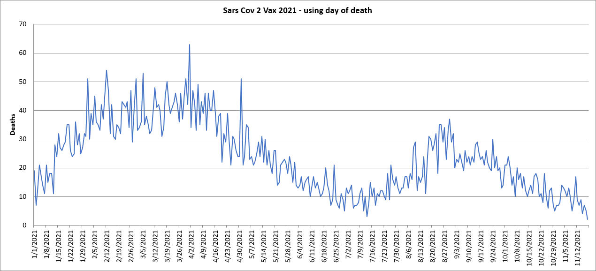
And here is a chart showing the numbers of vaccines administered over the same time range. This data is obtained directly from the CDC.
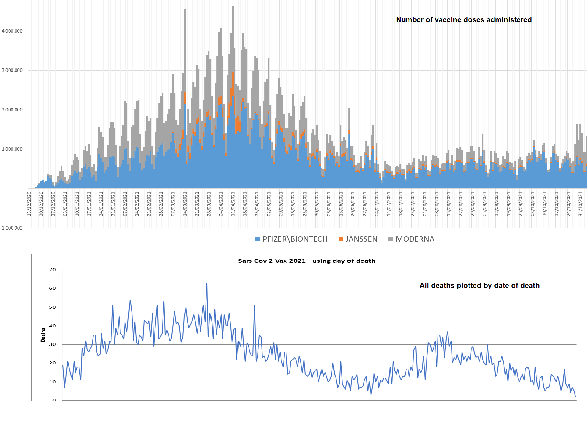
Deaths by State for Total Vaccinated over 2021
If the numerous deaths and disabilities following vaccination are caused by the vaccine, then we would expect the number of deaths and disabilities to increase in direct proportion to the number vaccinated. We have just seen how the number of deaths per number vaccinated varies over time. However, if we take the entire year of 2021, and sum up the total deaths for each State in the USA, and the total vaccinated for each State in the USA, then we get some very interesting results.
Here is a table showing the number vaccinated in each state of the USA, and the number of deaths following vaccination.
[I filtered VAERS for all COVID vaccines, then for DIED = Y, then for each USA State in turn]
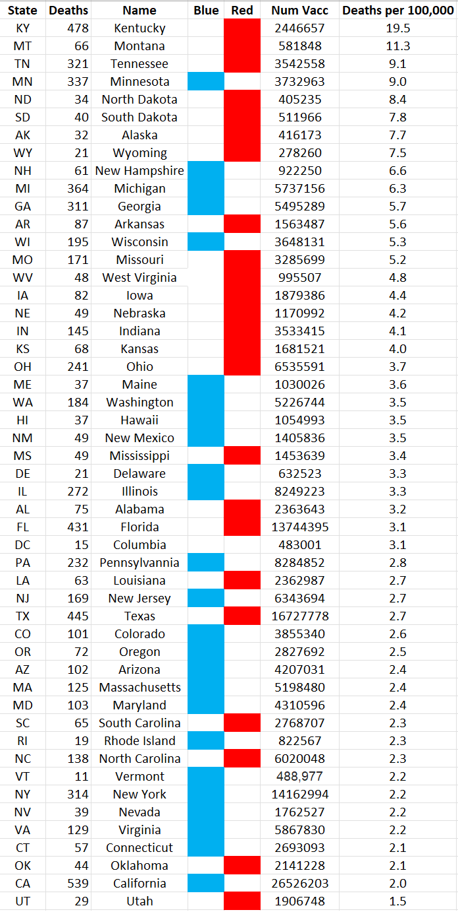
When this data is plotted on a graph the result is a straight line. As vaccination increases so do the number of deaths. They are in direct proportion, because the vaccinations are causing the deaths.
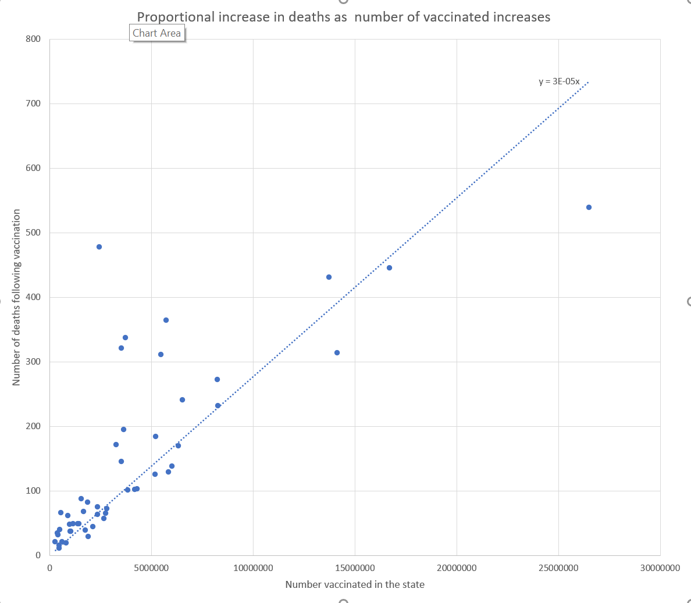
So size obviously matters. The more people vaccinated, the greater the number of deaths, by state.
But what about disability?
Here is a table showing the number vaccinated in each state of the USA, and the number of disabilities following vaccination.
[I filtered VAERS for all COVID vaccines, then for DISABILITY = Y, then for each USA State in turn]
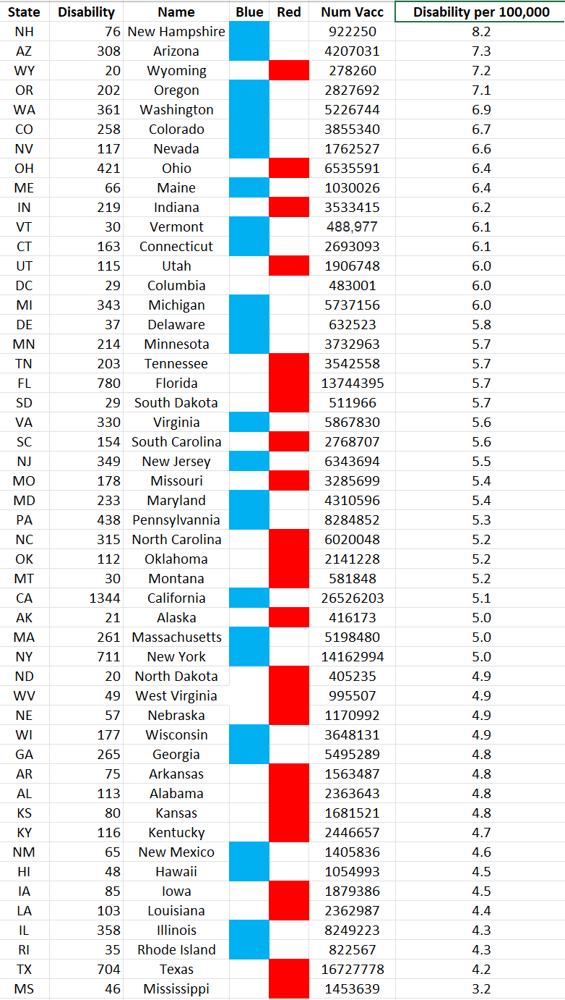
When this data is plotted on a graph the result is a straight line. As vaccination increases so do the number of disabilities. They are in direct proportion, because the vaccinations are causing the disabilities.
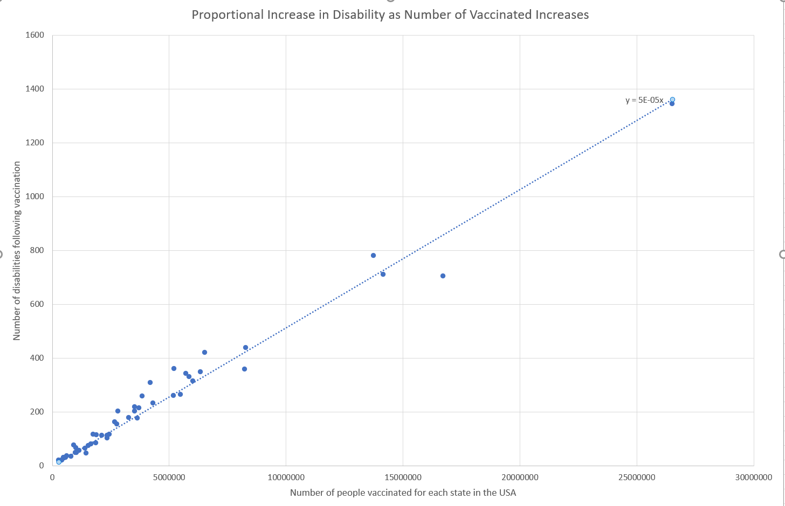
Infact the "Disability" graph is so close to a straightline, that we can create an equation relating number vaccinated to number of disabilities that will follow. This is because the ratio between vaccination and disability is a constant.
Disability = Vaccinated x 1/20,000
e.g. if 5,000,000 are vaccinated, this will produce 250 disabled people. (This formula has predictive power)
In comparison, the equation describing the "Death" graph above is -
Deaths = Vaccinated x 1/33,000
which means that the ratio of disabilities to deaths will be 5 : 3; for every 5 people disabled, there will be 3 deaths.
The consistency with which death and disability occur, is demonstrated by their conformity to these equations. However, we should realise that the outcomes of death and disability are just tips of an "iceberg" - even though many escape death and disability, they may still undergo significant internal damage at a sub-clinical level, resulting in reduced physical or mental capacity and increased discomfort.
Size really does matter - states with more vaccinated have more disabilities following vaccination. This is strong evidence of the causal relationship between the vaccine and the resulting disabilities and deaths.
Just To Reinforce the Point
Here is a chart showing how number of disabilities changes as number of vaccinated changes for each state. One follows the other with uncanny synchronicity - like a reflection in a mirror.
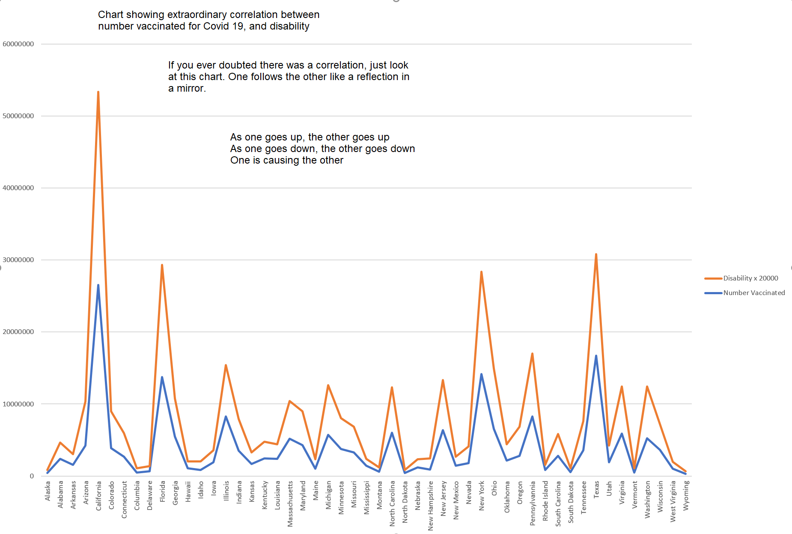
To make this clearer here are the separate graphs for number vaccinated by state, and for number of disabilities by state printed one on top of the other. The strength of correlation is absolutely extraordinary.
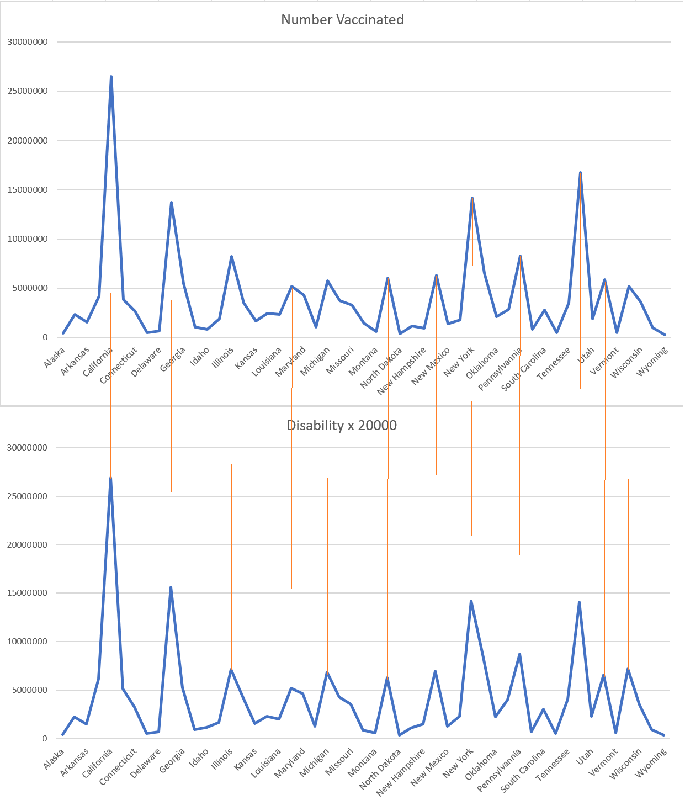
In the light of this degree of correlation there can be absolutely no doubt that these vaccinations are the singular cause of these devastating injuries. It follows that persistence of the government, medical authorities and employers in enforcing vaccination, despite the obvious evidence of harm caused, is prima facie evidence of intent to harm - for which there is no evasion of liability under EUA.
The Under-Reporting Factor
The under-reporting factor in VAERS is estimated to be about 40 x. This means that only one 40th of the deaths and disabilities are being reported to VAERS. If this is correct then the figures become a tad more scary.
What about time-wise?
Is it true that the more often you take the vaccine, the more you are injured? Even Pfizer's own data support the idea that the more often you take the vaccine, the worse the effects become - see -
Repeated injection
Lot Size
Lot size is another index of the number of people vaccinated. Bigger lot sizes mean that more people have been vaccinated with that lot. Consequently we find that lots with larger sizes are strongly associated with higher numbers of adverse reactions, deaths and disabilities.
Currently we only know the lot sizes for 33 lots. When we plot the number of deaths and disabilities against the lot sizes for each of these lots, we find that there is a strong linear correlation of 0.86. The bigger the lot, the higher the number of injuries.
Size matters, size matters, size matters.
Other Factors Besides Size
Please take another look at the chart for deaths. You will see that some states are expressing far higher numbers of deaths than would be expected for the number vaccinated in those states.
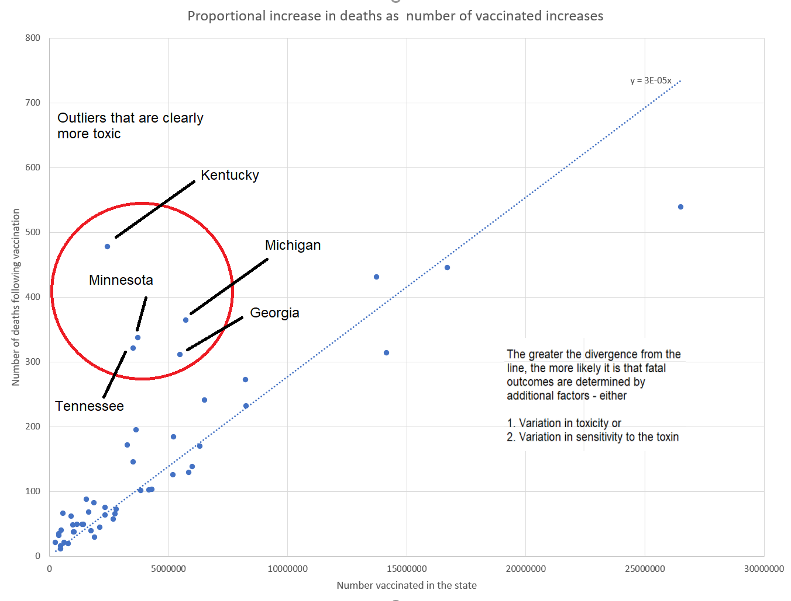
Further investgation may reveal why these outliers are occurring. Other factors are at play, such as -
Contact
covidscienceteam@protonmail.com
Created by Craig Paardekooper ©2021